3.3 Lists covers creating bulleted lists, used later in this tutorial.
3.5 Tables covers building and formatting tables, used later in this tutorial.
We'll use these three images in the tutorial, sized for the web at 720px wide. Right-click each and save to your computer:
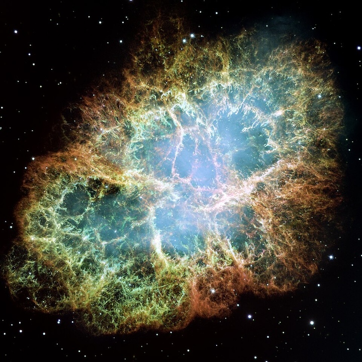
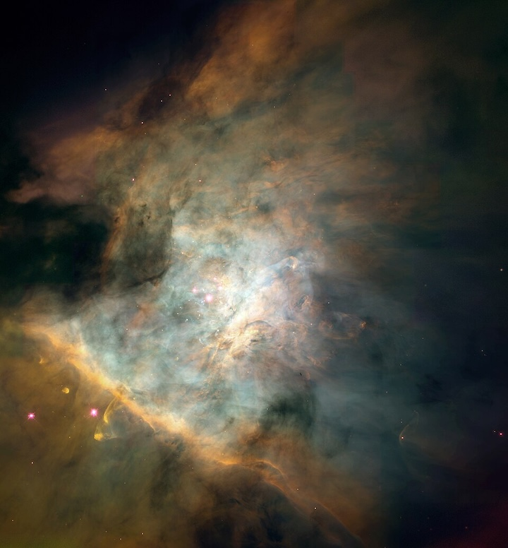
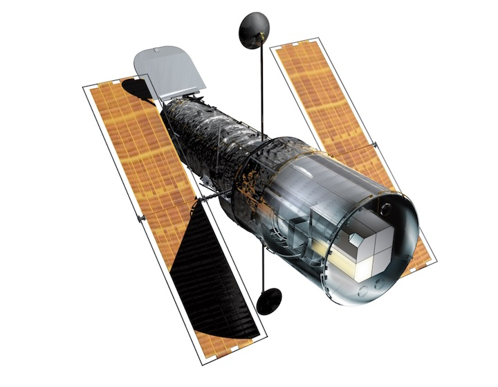
Steps
Embed an Image with a Caption
Log in to Joomla backend and navigate to the Home Dashboard.
In the Administrator Menu, click Content > Categories.
Click New. Result: A new-category form appears.
Title:Astronomy
Click Save & Close. Result: The Astronomy category is added.
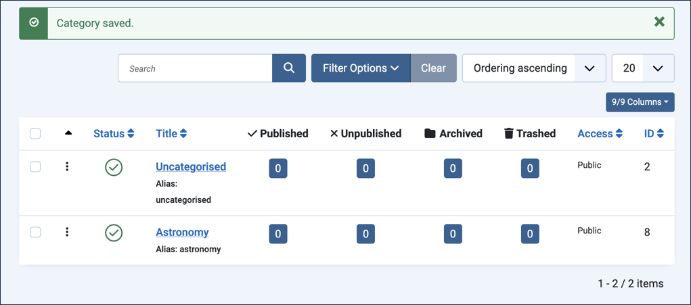
The Astronomy category added
In the Administrator Menu, click Content > Articles.
Click New. Result: A new-article form appears.
Title:Crab Nebula
Category:Astronomy
Click into the Article Text area then select Media from the CMS Content menu. Result: The Media page appears in a popup frame.
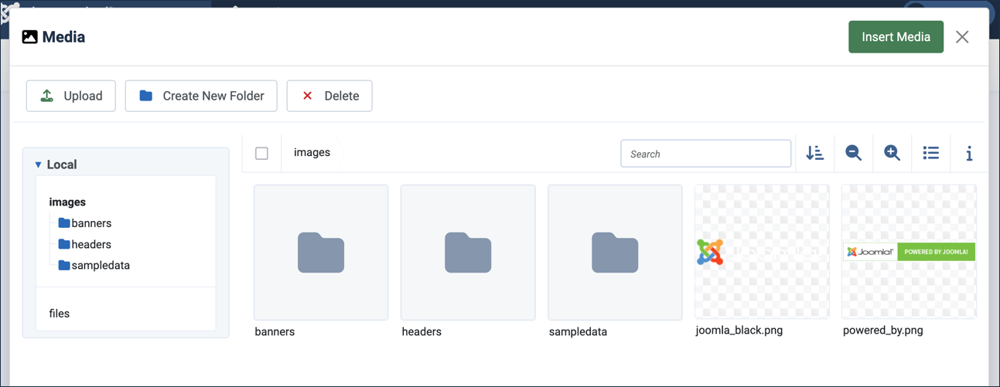
The Media page
Click to add a new folder and name it Astronomy. Result: The page refreshes with the new folder shown. Note: This is a media folder for organising files — a different thing from the Astronomy category we just created, even though they share a name here.
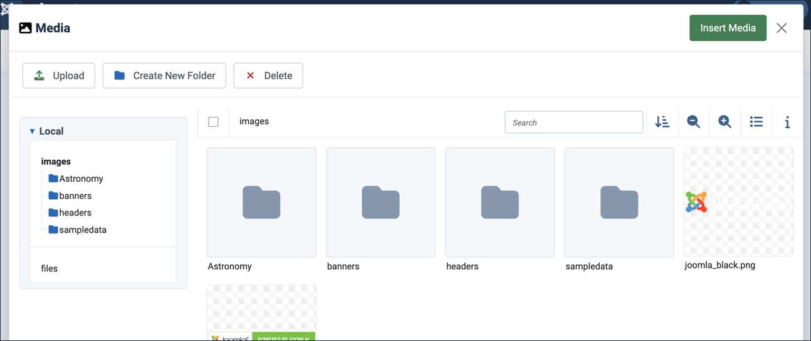
The new Astronomy media folder
In the left-side navigation area, click on the new folder. Result: The page refreshes and displays the new folder.
Upload all three images you downloaded earlier — Crab Nebula, Orion Nebula, and the Hubble Space Telescope image — to the new folder, using drag-and-drop or the Upload button at the top of the page. Note: The images are uploaded to the folder but not yet added to your article.
Tick the checkbox on the Crab Nebula thumbnail to select it.
In the Additional Data form, add descriptive alternate text, Crab Nebula.
Click the Insert Media button at the top of the form.
Result: The frame closes and the image has been added to the article.
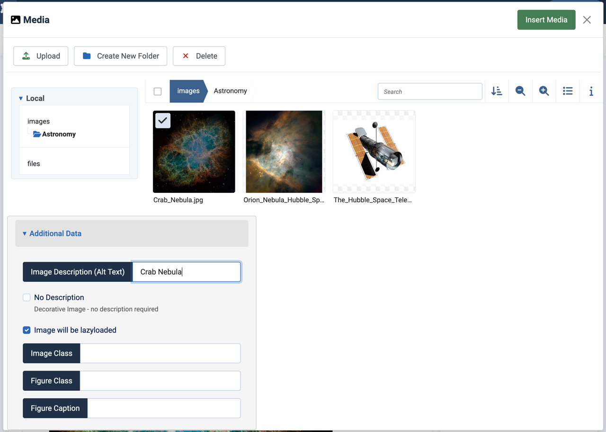
Selecting the Crab Nebula image and adding alternate text
Click on the image to select it. Result: A blue bounding box appears with square handles at the corners.
Drag a handle to resize the image to approximately 600px wide. Note: A small popup appears as you drag, showing the image's current size.
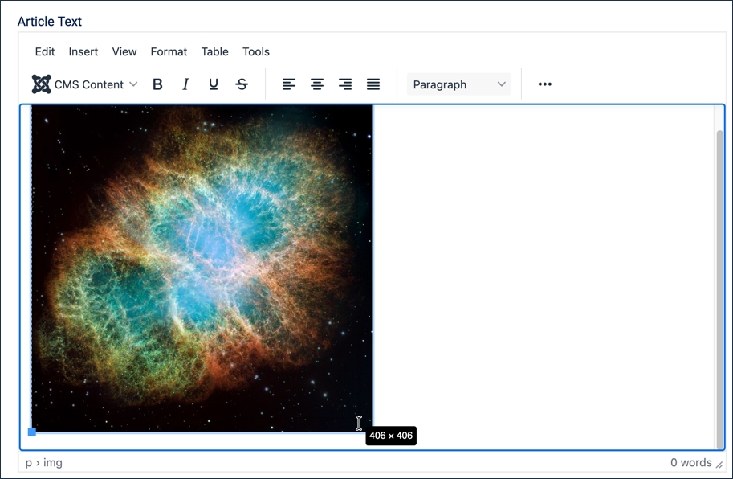
Resizing the image, with the size popup visible
Right-click over the image and select Image.
Check the Show caption box then click Save.
The image returns with a caption area. Type a caption, The Crab Nebula, a supernova remnant about 6,500 light-years from Earth.
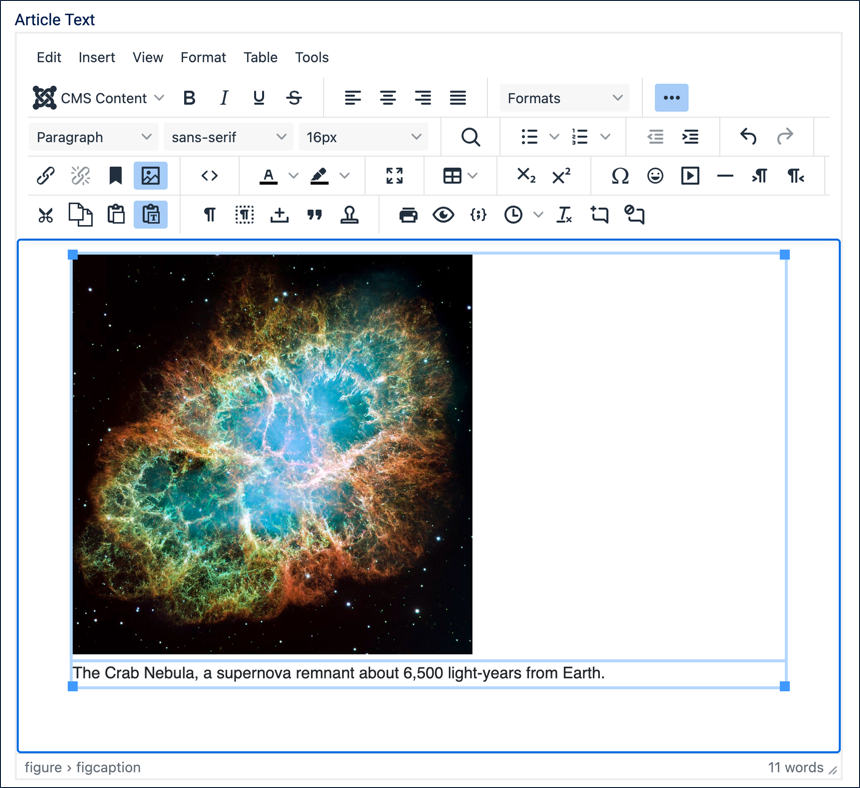
Typing the image caption
Click Save (do not close the article yet) — we're not quite done.
Add an Image to a List Item
Images aren't limited to sitting on their own — they can appear inside a list item too, alongside the item's text.
Click the image to select it. Click just to the right of the bounding box (or tap the right arrow key once) to move the insertion point past the image, then press Return to begin a new line below it.
Type a short lead-in sentence: Other notable deep-sky objects worth knowing about include:
Press Return, then select the Bulleted List button in the toolbar, as covered in 3.3 Lists.
Type the first list item: Andromeda Galaxy — the nearest large spiral galaxy to the Milky Way.
Press Return to start a second list item, then type: Orion Nebula — a bright stellar nursery visible to the naked eye under dark skies.
Press Shift+Return twice to add two line breaks within the same list item, placing the cursor on its own line below the text.
Select Media from the CMS Content menu.
Tick the checkbox on the Orion Nebula thumbnail to select it.
Add alternate text, Orion Nebula.
Click Insert Media.
Result: The image appears on its own line within the list item.
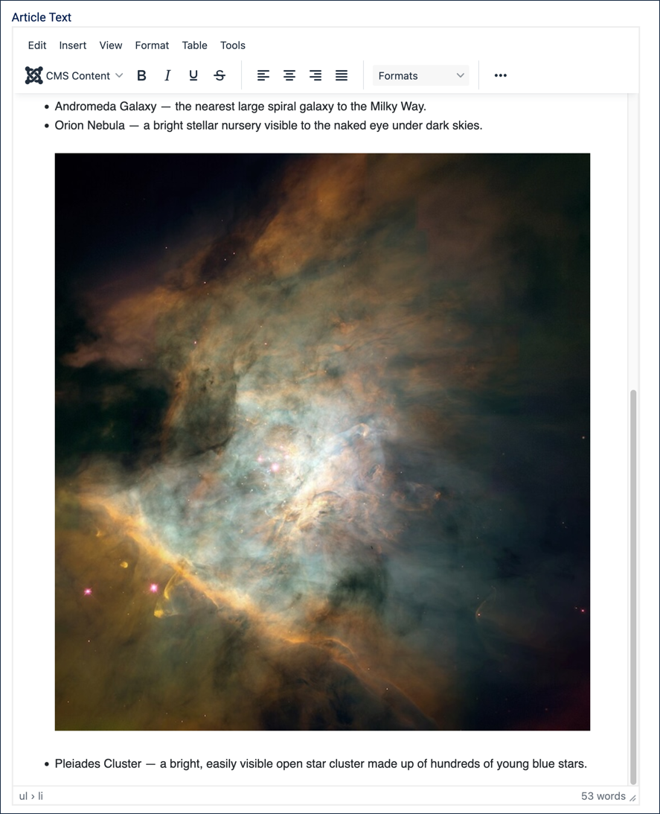
The Orion Nebula image inline within a list item
Press Shift+Return once to add a line break below the image, still within the same list item.
Press Return to end the current list item and start a new bullet.
Type the third list item: Pleiades Cluster — a bright, easily visible open star cluster made up of hundreds of young blue stars.
Press Return twice to end the list.
The Orion Nebula image is too large for the list. Right-click it and select Image, then under Width enter 480 and press Tab. Result: The Height field updates automatically, since the lock icon keeps the two fields proportional. Click Save to update the image.
Click Save to save the article (but don't close the article yet).
Add an Image to a Table Cell
Tables are meant for structured data, not for controlling page layout — but pairing an image with a short fact in a table cell is a legitimate use. Here we'll build a small table using the Crab Nebula image already uploaded to this article.
Click below the list, then press Return to start a new paragraph.
Insert a table, as covered in 3.5 Tables, sized 2 columns by 2 rows — click the Table icon in the toolbar, hover over Table, then trace out a 2×2 grid.
In the first row, type Image in the first cell and Fact in the second.
Click into the second row's first cell, then select Media from the CMS Content menu.
Tick the checkbox on the Crab Nebula thumbnail to select it, add the alternate text Crab Nebula then click Insert Media. Note: This is the same image already used earlier in the article — a single image can appear more than once in an article.
Right-click the image and select Image, then under Width enter 240 and press Tab. Result: The image now fits the cell better.
Click into the second row's second cell, then type a fact: About 6,500 light-years from Earth, still expanding at over 1,500 km/s.
Highlight both cells in the first row, right-click, hover over Cell, then click Cell properties. Under Cell type choose Header cell.
Click Save (do not close the article yet).
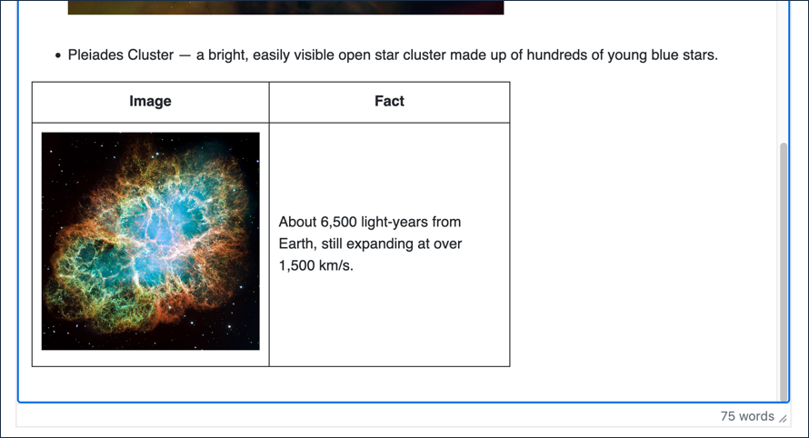
The table with the Crab Nebula image and its fact
Add a Bordered Image
The Orion Nebula photo earlier in this article was captured by the Hubble Space Telescope, so let's close with an image of Hubble itself.
Click below the table, then press Return to start a new paragraph.
Type a lead-in sentence: The Orion Nebula photo above was captured by this instrument:
Select Media from the CMS Content menu.
Tick the checkbox on the Hubble Space Telescope thumbnail to select it.
Add alternate text, The Hubble Space Telescope.
Click Insert Media.
Click the image to select it, then right-click and select Image. Result: The Insert/Edit Image form reopens.
Click the Advanced tab, then under Border width enter 4 and set Border style to Double.
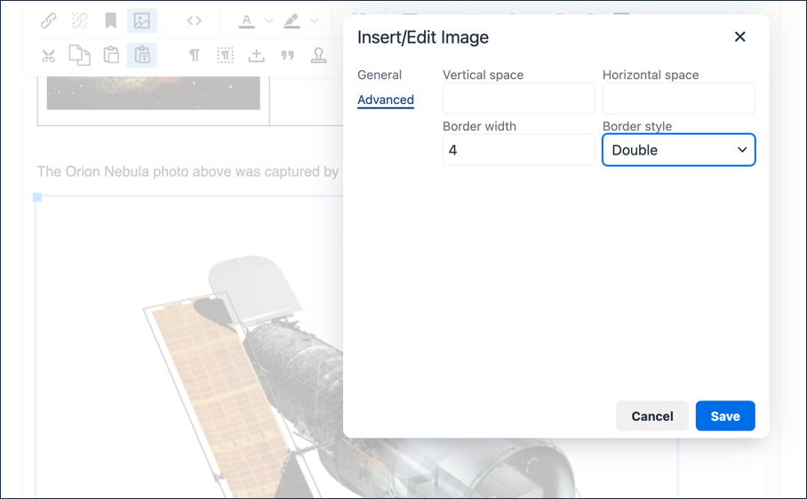
Setting the border on the Hubble Space Telescope image
Click Save.
Click Save at the top of the screen, then click Preview to see everything together — the captioned image, the list with its inline thumbnail, the table, and the bordered telescope image.
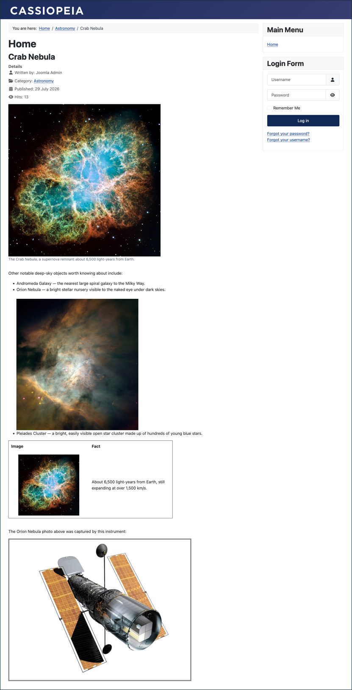
The finished article in Preview
Close the preview screen, then click Save & Close.
Concepts
Large images can take a long time to download, making your page slow. Optimising images by using appropriate size, resolution, and format can speed up page load time.
Images are stored separately from articles on the server. A single image can appear in multiple articles, or more than once in the same article, as we saw when reusing the Crab Nebula image in the table above. Deleting an article does not delete the image.
Adding alternate text to an image is important for accessibility. More information can be found in this WebAIM Alternative Text article.
A caption adds context a reader might not get from the image alone — use one when it genuinely helps. A simple, self-explanatory image often doesn't need one.
Images work inside list items just as they do in ordinary paragraphs, which is useful when a list mixes visual and text detail.
A table's job is to present structured, tabular data — not to position unrelated content side by side for the sake of layout. Pairing an image with related facts in a table, as we did above, is a reasonable use; using a table purely to arrange content visually is not.
Attribution
The images used in this tutorial came from the Wikimedia Commons website and comply with the licensing for each: